Looking for the full comparison? The new benchmark includes 16 models plus a baseline, grouped validation, and a best-model breakdown. Open the 16-model comparison →
This page preserves all exploratory charts and the original three-model results.
Car features & MSRP · research workspace
Exploratory charts & original model experiment
Explore vehicle-price patterns, compare three regression models, and inspect where predictions succeed or fail. Built from the same cleaned car dataset used throughout Assignments 1–5.
10 + 5Exploratory charts + model diagnostics
3 modelsPlus a median-price baseline
2,324Held-out test records
Preliminary experiment completed. Random Forest had the lowest error in this split. Repeated validation and sensitivity analysis remain future work.
Chart 01
Price distribution: a long upper tail
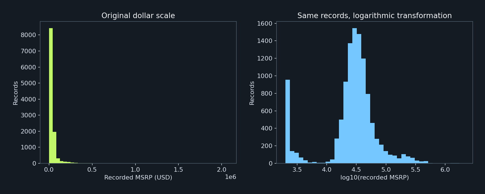
All 11,199 cleaned records. Equal-width bins within each scale. No prices removed or capped.
Observation → Mean recorded MSRP is $41,926, above the $30,675 median. The maximum is $2,065,902.
Interpretation → A small number of expensive records pull the mean upward. The log transformation makes the central distribution easier to inspect.
Research Implication → Report the median and IQR alongside the mean, and compare raw-price and log-price models.
Chart 02
Horsepower distribution
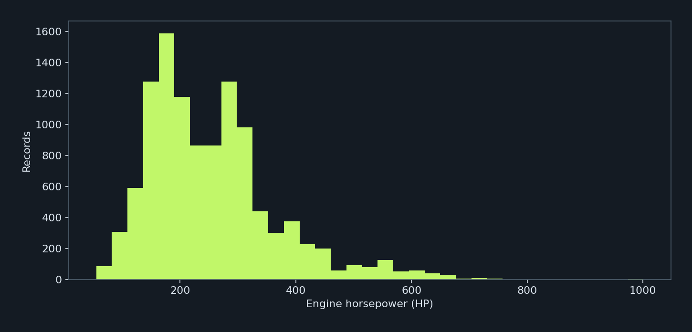
11,130 records with horsepower. 69 missing values excluded, without imputation.
Observation → Median horsepower is 239 HP. The middle half spans 172–303 HP, and the maximum is 1001 HP.
Interpretation → Most records have moderate power, with a smaller high-performance tail.
Research Implication → Use horsepower as a candidate explanatory variable and check whether extreme values dominate its relationship with price.
Chart 03
Price differences across vehicle sizes
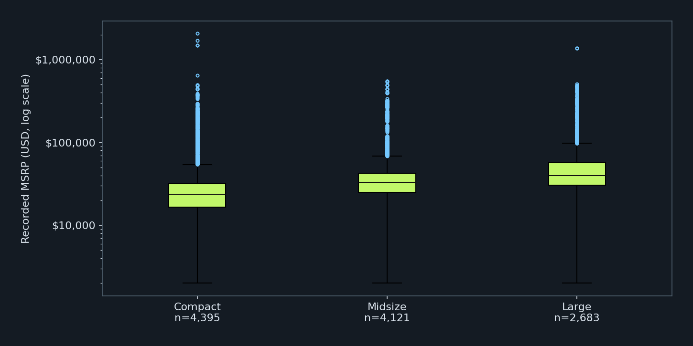
All 11,199 records. Boxes show Q1–Q3 and median. Whiskers use 1.5×IQR within groups on original prices; dots are retained outliers. Log axis changes display only.
Observation → Median recorded prices are $23,650 for compact, $33,295 for midsize, and $39,970 for large vehicles.
Interpretation → Larger categories have higher medians, but their distributions overlap. Size alone does not explain price.
Research Implication → Compare size groups while accounting for horsepower, brand, and model year in later analysis.
Chart 04
Horsepower and price
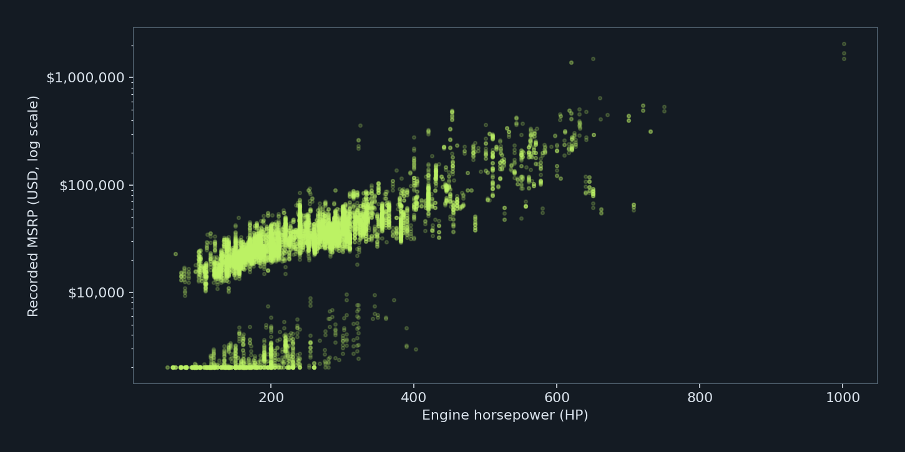
All 11,130 complete horsepower–price pairs plotted. Transparent points reveal overlap. Correlations use original numeric values or the specified log transformation.
Observation → Pearson correlation is 0.659 for horsepower and MSRP, and 0.685 for horsepower and log10(MSRP).
Interpretation → Higher-power records generally cost more, with substantial price variation at similar horsepower. Correlation does not establish causation.
Research Implication → Evaluate horsepower with brand, size, and year controls. Compare results after excluding flagged price-floor records.
Chart 05
Correlations among numeric features
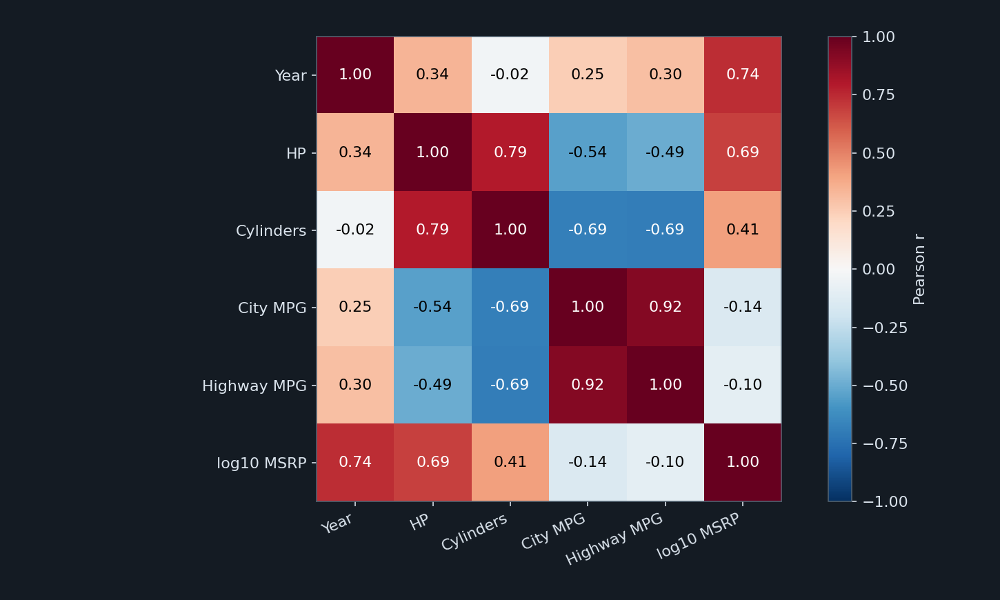
11,084 complete cases across these six variables, restricted to the existing known non-electric fuel-economy subset. A common subset makes matrix entries comparable.
Observation → City and highway MPG have r=0.919. Horsepower and highway MPG have r=-0.494.
Interpretation → Fuel-economy measures overlap strongly. The power–efficiency relationship may reflect vehicle design and group composition.
Research Implication → Check redundant predictors before modeling and avoid interpreting any correlation as an independent causal effect.
Chart 06
Model-year patterns and uneven coverage
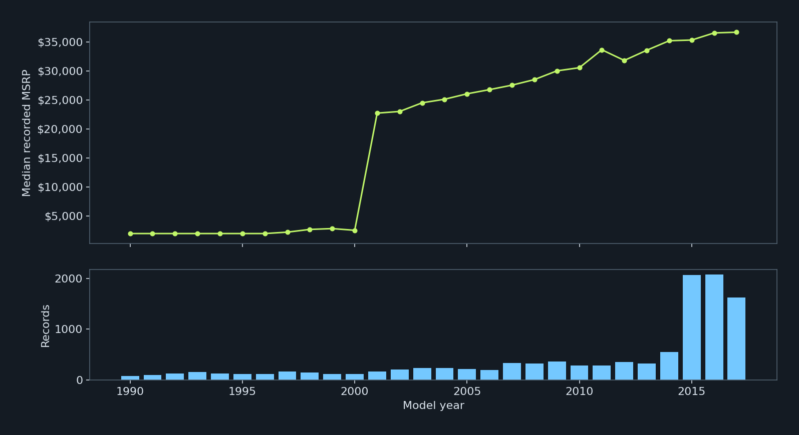
All 11,199 records grouped by model year (1990–2017). Prices are not inflation-adjusted. The lower panel shows each group denominator.
Observation → Median MSRP rises from $2,561 in model year 2000 to $22,768 in 2001. Model years 2015–2017 contribute 5,763 records.
Interpretation → The abrupt price shift and uneven year coverage suggest source-price construction and sample composition need review. This is a cross-sectional model-year comparison, not repeated observations of the same cars.
Research Implication → Avoid claiming historical market price growth. Compare within model-year groups and examine the $2,000 source-price floor.
Chart 07
Fuel economy by transmission
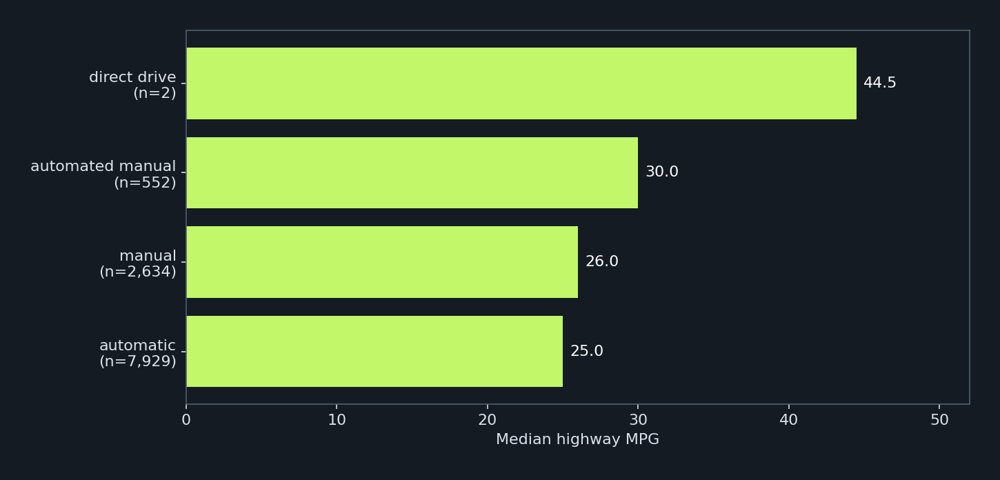
Known non-electric fuel-economy subset, excluding missing transmission. All eligible records used in each group. No electric efficiency values mixed into MPG comparisons.
Observation → Median highway MPG is 25 for automatic, 26 for manual, 30 for automated manual, and 44.5 for direct drive. Direct drive has only two eligible records.
Interpretation → Group sizes differ greatly. The two-record direct-drive result is unstable and should not be generalized.
Research Implication → Use well-supported groups for later comparisons and account for fuel type, year, and vehicle size.
Chart 08
Missing values by field
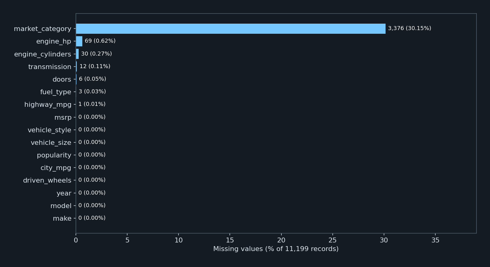
All 16 original fields in the cleaned dataset. Missing category markers normalized in Assignment 3 count as missing here; this is not the raw-data missingness count.
Observation → Market category is missing in 3,376 records (30.15%). Horsepower is missing in 69, cylinders in 30, transmission in 12, doors in 6, fuel type in 3, and highway MPG in 1.
Interpretation → Missingness is concentrated in specific fields. Complete-case filtering across every variable would discard many usable records.
Research Implication → Use only the fields required for each analysis and report its denominator. Avoid requiring market category for the main price analysis.
Chart 09
Horsepower missingness differs by fuel group
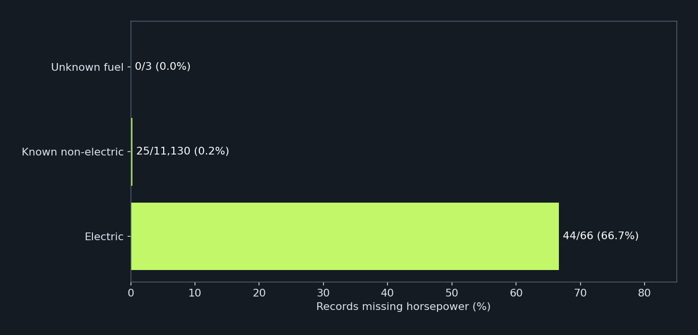
All 11,199 records assigned to mutually exclusive fuel groups. Bar labels show missing/total. This descriptive comparison does not prove a missing-data mechanism.
Observation → Horsepower is missing for 44 of 66 electric records (66.7%), compared with 25 of 11,130 known non-electric records (0.22%). None of the three unknown-fuel records lacks horsepower.
Interpretation → Dropping missing horsepower disproportionately removes electric records. Missingness is associated with fuel group.
Research Implication → Describe the selection bias in horsepower-based findings. Analyze electric vehicles separately if their power and efficiency units can be verified.
Chart 10
Outliers and potential anomalies
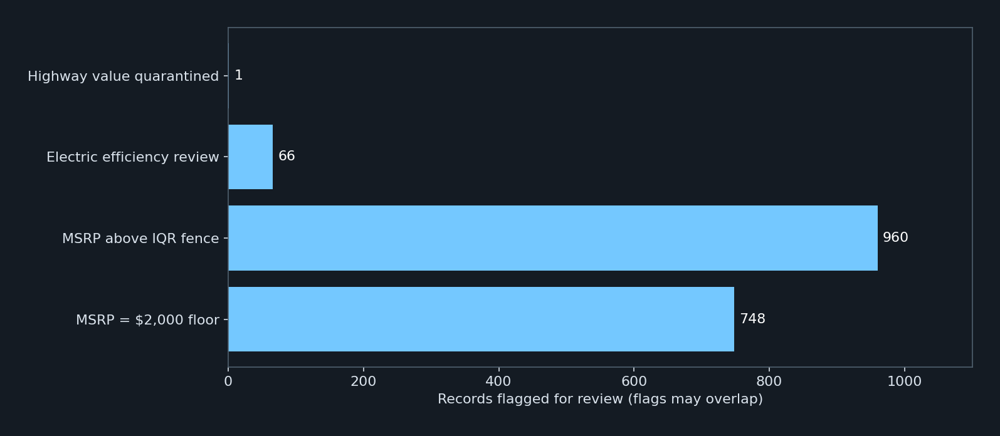
MSRP fence = Q3 + 1.5×IQR from all cleaned prices. Flags are not mutually exclusive. The quarantined highway value is already missing in the cleaned data. Other flagged records remain retained.
Observation → There are 960 MSRP values above the $75,182 upper IQR fence and 748 records at exactly $2,000. There are also 66 electric-efficiency review flags and one quarantined highway value.
Interpretation → Extreme prices may be valid luxury vehicles. The repeated minimum and questionable efficiency values require source review, rather than automatic deletion.
Research Implication → Run sensitivity analyses with and without price-floor and price-outlier records. Keep electric efficiency separate until units are confirmed.
All models evaluated on the same 2,324 test records
Model
Test MAE ↓
Test RMSE ↓
Test R² ↑
Train MAE
Median baseline
$19,728
$49,009
-0.038
$24,636
Linear Regression
$10,849
$20,732
0.814
$10,423
Decision Tree
$8,864
$21,109
0.807
$7,497
Random Forest
$6,217
$13,485
0.921
$3,063
MAE is average absolute dollar error. RMSE penalizes large errors more heavily. R² compares squared errors with variation around the test mean; it is not an accuracy percentage. Train MAE helps expose overfitting.
Linear Regression
A weighted combination of vehicle features. Useful as a simple, interpretable starting model.
Unconstrained predictions produced 129 negative prices on the test set. Those predictions are retained in the reported scores.
Decision Tree
Groups records using a sequence of feature splits. Captures nonlinear patterns.
Maximum depth 8; minimum 5 training records per leaf; random seed 42.
Random Forest
Averages 120 trees to capture feature combinations and reduce reliance on one tree.
Maximum depth 18; minimum 2 training records per leaf; all features considered at each split; random seed 42.
Model comparison: average prediction error
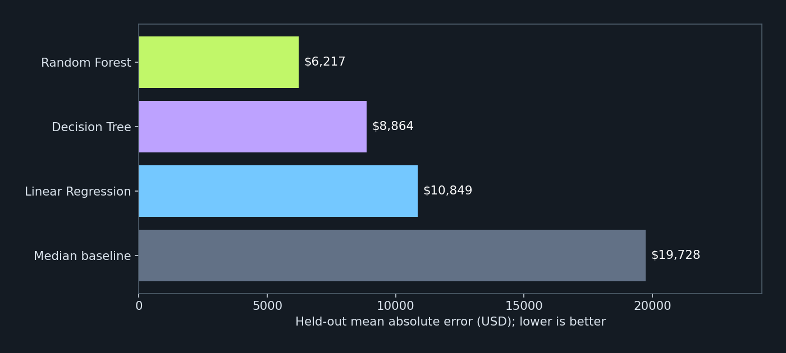
Same 8,875 training records and 2,324 test records for every model. Hyperparameters were fixed before this run; no tuning was performed.
Observation → Random Forest has test MAE $6,217, compared with $8,864 for Decision Tree, $10,849 for Linear Regression, and $19,728 for the median baseline.
Interpretation → All three trained models improve on the baseline in this split. Random Forest reduces MAE by approximately 68.5% relative to the baseline.
Research Implication → Repeat grouped evaluations before selecting a final model. One split does not establish stable superiority.
Predicted versus actual prices
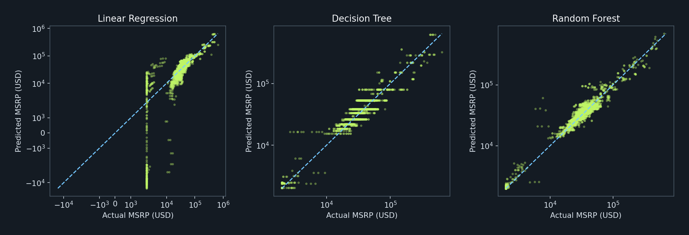
Every test record is shown. Both axes use a symmetric-log scale with a linear region near zero (±$2,000), allowing negative predictions to remain visible. Dashed line indicates perfect prediction.
Observation → Points away from the diagonal show prediction errors. Linear Regression produces 129 negative predictions.
Interpretation → The linear model is not constrained to positive prices. Prediction quality varies across the price range.
Research Implication → Test a log-price target and compare errors by price range using training-set validation.
Random Forest residuals
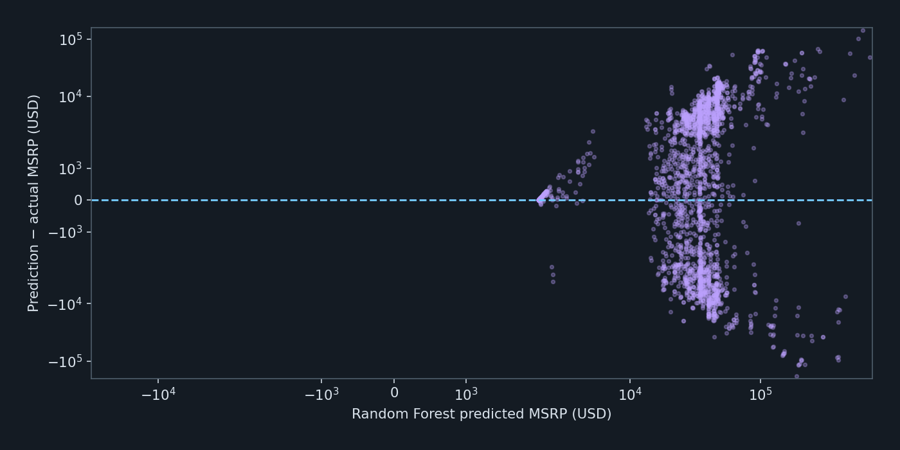
Residual = predicted − actual MSRP. Symmetric-log axes show positive and negative values. All 2,324 test records are plotted.
Observation → Random Forest RMSE is $13,485, substantially higher than its $6,217 MAE.
Interpretation → Some large errors remain despite a lower average error. Negative residuals mean underprediction.
Research Implication → Inspect expensive vehicles and source-price-floor records before making broad claims about performance.
Model errors by vehicle size
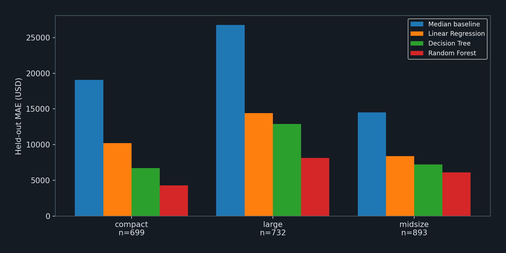
All test records, grouped by vehicle size. Group comparisons are descriptive and do not establish statistical significance.
Observation → Random Forest test MAE by size is compact: $4,324 (n=699); large: $8,150 (n=732); midsize: $6,114 (n=893).
Interpretation → An overall score hides differences across vehicle categories. Group sample sizes and price distributions also differ.
Research Implication → Evaluate group-specific reliability and add price-band comparisons in the final paper.
Which features does Random Forest rely on?
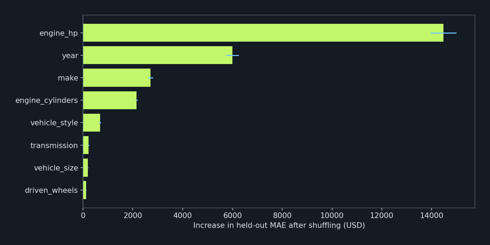
Permutation importance on the full held-out test set: mean MAE increase from three random shuffles per original input feature. Error bars show shuffle standard deviation, not confidence intervals. Correlated features can share or mask importance.
Observation → Shuffling horsepower increases test MAE by about $14,474; shuffling year increases it by about $6,006.
Interpretation → In this fitted model and test set, horsepower and year carry substantial predictive information. Importance is not evidence of causation.
Research Implication → Check whether the year effect reflects source-price construction, and repeat the analysis after reviewing the $2,000 floor.
What was actually run
Data: All 11,199 cleaned records from Assignment 3. The target is original recorded MSRP in dollars. No global outlier removal, clipping, or target transformation was used.
Inputs: year, horsepower, cylinders, make, vehicle size, vehicle style, transmission, and driven wheels. Model name is used only to define split groups. No MSRP-derived input columns are included.
Split: GroupShuffleSplit with seed 42 reserves 20% of make–model groups for testing. This produced 8,875 training records in 742 groups and 2,324 test records in 186 groups. Group overlap is zero. Group proportions do not guarantee exactly 20% of rows.
Preprocessing: Numeric medians, missingness indicators, and standardization are fitted only on training data. Categorical missing values use the training mode, followed by one-hot encoding with the first category dropped. Unknown test categories are encoded as all zeros. Genesis appears only in the test split, which limits interpretation for that brand.
Training: Three regression models and a training-median baseline use the same split. Fixed model settings are documented above and in the Python script. No cross-validation or hyperparameter search was performed in this preliminary run.
Evaluation: MAE, RMSE, R², prediction plots, size-group errors, and Random Forest permutation importance. The test scores were not used to tune these models.
Limits and next steps
This single split is an exploratory benchmark. Random Forest train MAE is $3,063 versus test MAE $6,217, showing a generalization gap. Historical records and repeated specifications are not a representative sample of current transactions. The existing cleaning rules were defined before this split and used full-dataset quality checks. No price flags derived from those checks were used as predictors.
Next: run grouped cross-validation within the training data, evaluate log-price modeling, investigate price floors and outliers, inspect errors by price band and unseen brand, and reserve fresh evaluation data for any further development prompted by these test results. Then refine the dashboard and write the methods, results, visualization contribution, and conclusions for the final paper.
Run python run_models.py with pandas, NumPy, Matplotlib, and scikit-learn installed. This run used scikit-learn 1.8.0. The source-data SHA-256 is retained in summary.json.